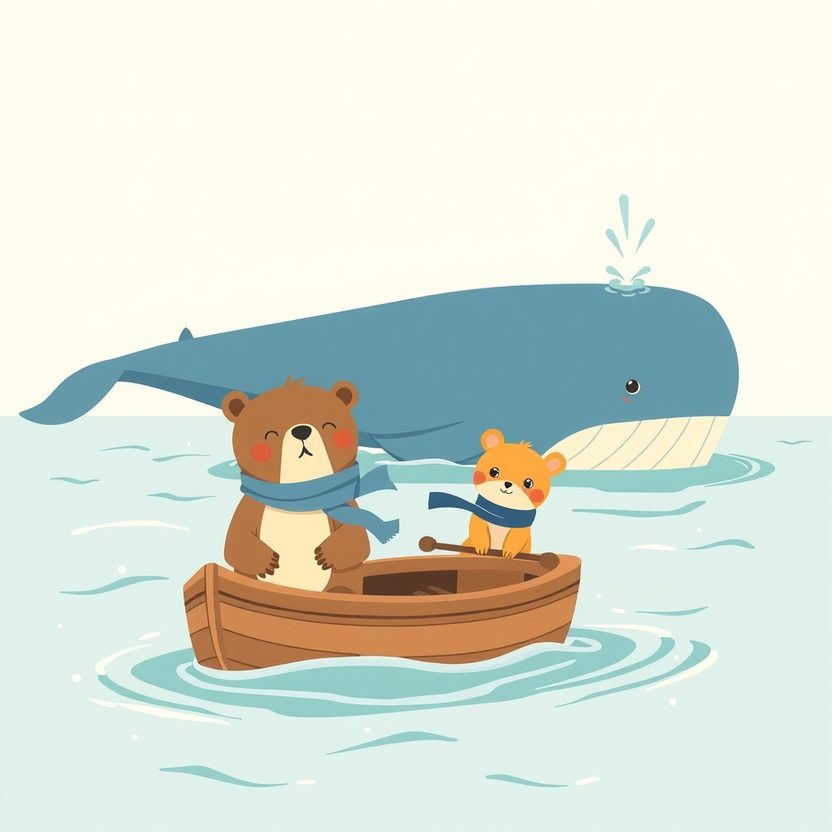

Titistoire › Les Étoiles (3-6 ans)
Nestor et le chant d'Ondine
Une histoire de Nestor l'ourson pour parler de : dire au revoir.

▶ Écouter et regarder l'histoire
Gratuit, sans inscription : la voix lit, le texte suit mot à mot, les images tournent comme dans un album.
Le texte de l'histoire
Tout l'été, Nestor a eu une amie pas comme les autres : Ondine. Elle est grande comme une île, bleue comme le soir, et quand elle rit, ça fait des vagues.
Chaque matin, Nestor rame jusqu'au large dans sa petite barque. Il tapote trois fois sur l'eau : plouf, plouf, plouf. Et Ondine remonte des profondeurs, lente et ruisselante.
Elle le promène sur son dos, elle lui fait des fontaines. Et le soir, quand les premières étoiles s'allument, elle chante : une chanson très lente, très grave, qui berce toute la mer.
Mais un matin, l'air a une autre odeur. Les oiseaux passent très haut dans le ciel, tous dans le même sens. Et l'eau, sous les doigts, est plus froide qu'hier.
Ondine contemple l'horizon. « Petit ours, murmure-t-elle, c'est bientôt l'heure. Quand l'eau refroidit, les baleines s'en vont vers le sud. Très loin. C'est ainsi depuis toujours. »
« Partir ? bredouille Nestor. Mais… tu reviens ce soir ? » « Je reviens au printemps. »
Le printemps ! C'est dans mille dodos, au moins. Une grosse boule monte dans la gorge de Nestor. Et comme il ne sait pas quoi en faire, la boule devient une bouderie.
« Alors t'es pas ma vraie amie ! bougonne-t-il, les bras croisés. Les vraies amies, ça reste ! » Et il rame jusqu'à la plage sans se retourner.
Ce soir-là, Ondine chante quand même. Nestor enfouit sa tête sous l'oreiller. Il entend tout.
Le lendemain, Nestor a un plan. Jusqu'au rivage, il traîne la plus longue corde du monde. Il en noue un bout à la queue d'Ondine, et l'autre au gros rocher de la plage.
« Voilà. Comme ça, tu restes », décrète-t-il, les poings sur les hanches. Ondine ne tire pas sur la corde. Elle pourrait la rompre d'un seul coup. Mais elle soupire, et ça fait un nuage.
« Petit ours. Si je reste, l'eau gèlera autour de moi. Et là-bas, dans les mers chaudes, il y a un bébé baleine qui attend de naître. Le mien. »
Nestor regarde la corde. Il regarde son amie. Et il regarde la mer, tout là-bas, là où l'eau est chaude.
Lentement, ses pattes défont le nœud. C'est le nœud le plus difficile qu'il ait jamais défait, et pourtant il n'était pas serré.
« J'ai pas envie que tu partes », hoquette-t-il, la joue contre sa grande amie. Et cette fois il pleure pour de bon, sans bouder. Ondine le laisse pleurer. Elle reste tout près, jusqu'à la dernière larme.
« Je vais te confier un secret de baleine, chuchote-t-elle. Mon chant voyage dans l'eau. Très loin. Plus loin que tous les bateaux. Si tu tends bien l'oreille, tu m'entendras. »
« Hmm… Et moi ? Tu m'entendras ? » « Si tu chantes. » Alors, tout l'après-midi, Ondine lui apprend sa chanson. Mmmm-ouuuu… Nestor chante faux, si faux que les poissons grimacent. Elle trouve ça parfait.
Il lui offre son écharpe bleue, qu'il noue au bout de sa nageoire. En échange, elle lui tend un coquillage rond, tout lisse. « Pour quand tu penseras à moi. »
Au matin, toutes les baleines sont rassemblées au large. C'est l'heure. Ondine lance une dernière fontaine, la plus haute de toutes, avec un arc-en-ciel dedans.
Dressé sur la pointe des pieds, Nestor agite la patte jusqu'à ce que la grande queue bleue ne soit plus qu'un petit point. Puis plus rien. La mer est plate comme un miroir.
Il a le cœur gros, le coquillage serré contre lui. Mais ce n'est plus une boule dure. C'est doux et lourd à la fois, comme une couverture.
L'hiver est long. Sous son bonnet de laine, Nestor ramasse des coquillages pour les montrer à Ondine. Il s'entraîne à chanter. Chaque soir, il compte les dodos, et puis il arrête de compter.
Certains soirs, il descend sur le ponton et colle son oreille tout contre l'eau. Et là, de très loin, de très profond… Mmmm-ouuuu. Deux voix. Une grave. Et une toute petite, toute neuve.
Alors, debout au bout du ponton, Nestor chante sa réponse, très faux et très fort. Puis il rentre se coucher en souriant. Le printemps, ça finit toujours par arriver.